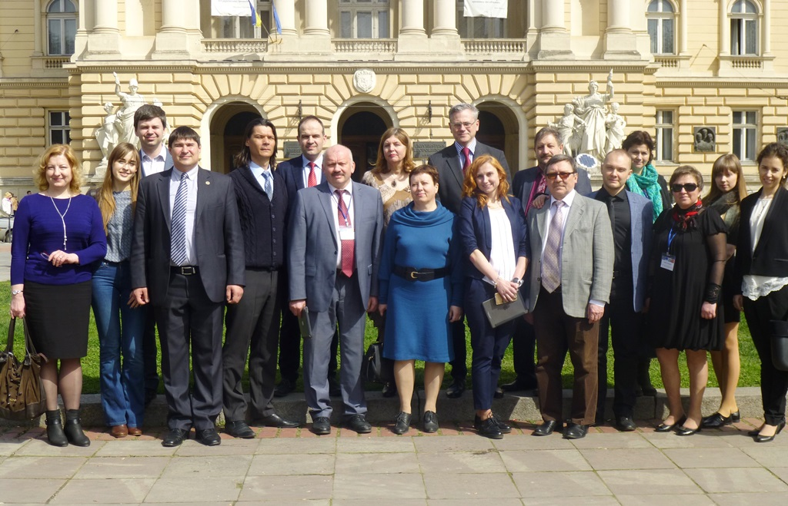
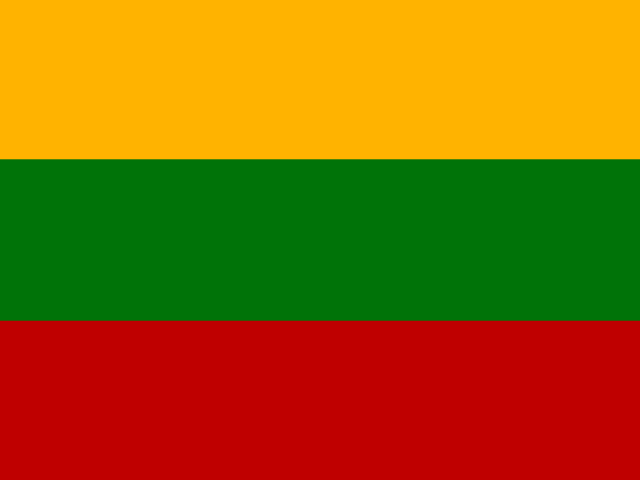
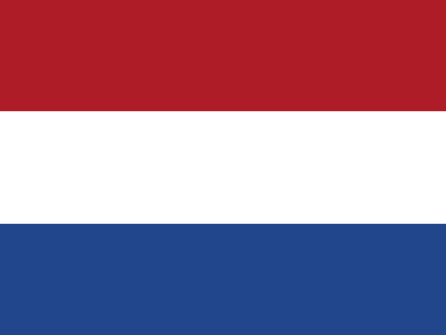
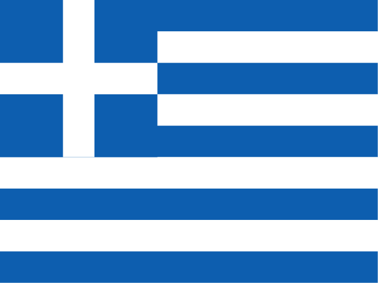
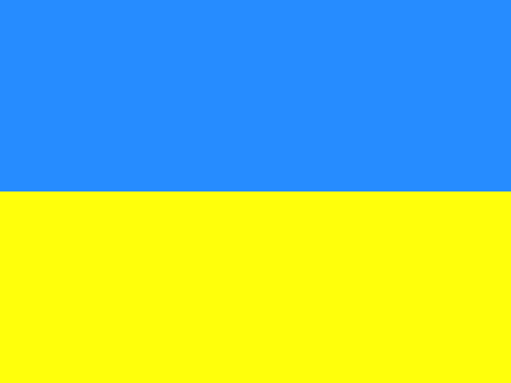

Упродовж 4-6 квітня 2016 року у Львівському національному університеті імені Івана Франка відбуваються заходи в рамках проекту: «Система забезпечення якості освіти в Україні: розвиток на основі європейських стандартів та рекомендацій» («Quality Assurance System in Ukraine: Development on the Base of ENQA Standards and Guidelines»). Координатором проекту є Технологічний Університет м. Вроцлав, Польща. До складу консорціуму входять більше п’ятнадцяти провідних університетів Європи, в тому числі й ЛНУ ім. Івана Франка, та інші наукові установи України.
Він є одним із десяти проектів, підтриманих Європейською Комісією в Україні та єдиним грантовим проектом з національним рівнем впровадження результатів. Проект відноситься до інструменту «Співпраця задля інновацій та обміну кращими практиками» програми ЕРАЗМУС+ і належить до пріоритетного напрямку «Розвиток потенціалу вищої освіти».
Метою проекту є підтримка реформування та розвитку системи забезпечення якості вищої освіти в Україні. Проект розрахований на розробку інструментів для сталого функціонування систем внутрішнього та зовнішнього забезпечення якості освіти; стимулювання більш широкого залучення студентів до процесів самоаналізу у вишах впровадження механізму самоаналізу як невід’ємного компоненту функціонування університетів.
 Литва:
 Німеччина:
Німеччина:
Нідерланди:
Греція:
Польща:
 Україна:
проректор з науково-педагогічної роботи, професор
тел: +38 044-239-34-36директор Науково-методичного центру організації навчального процесу, доцент.
заступник директора Науково-методичного центру організації навчального процесу Київського національного університету імені Тараса Шевченка, кандидат історичних наук, доцент кафедри новітньої історії України історичного факультету
методист вищої категорії Науково-методичного центру організації навчального процесу
методист вищої категорії Науково-методичного центру організації навчального процесу
методист Науково-методичного центру організації навчального процесу
заступник декана факультету кібернетики з навчальної роботи, доцент
доктор технічних наук, професор, професор кафедри математичної інформатики факультету кібернетики
доцент кафедри теорії та технології програмування факультету кібернетики, доцент
доцент кафедри прикладної статистики факультету кібернетики, доцент
доктор юридичних наук, доцент, доцент кафедри адміністративного права юридичного факультету
доцент кафедри прикладної лінгвістики Інституту філології, доцент